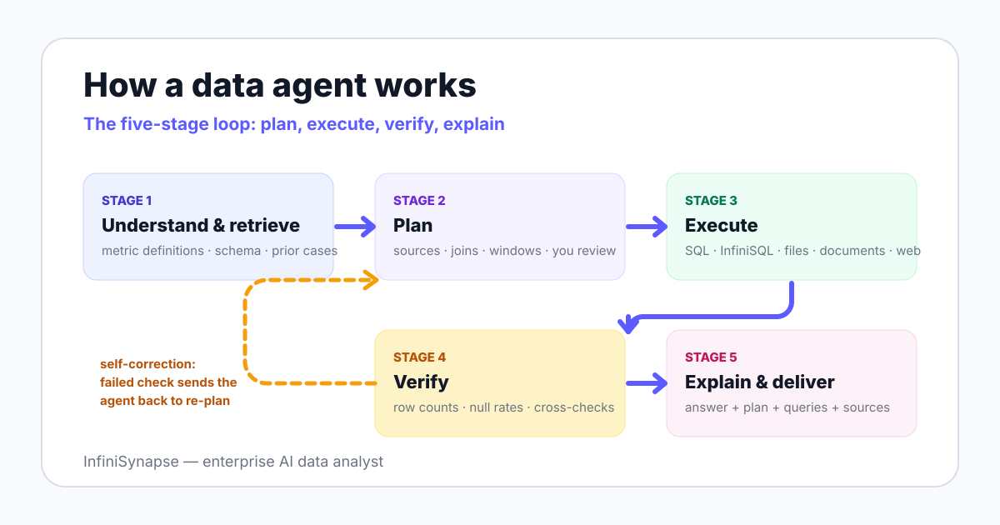

The term sits inside a broader shift in how large language models are deployed. Anthropic's engineering guide Building Effective Agents draws the line at autonomy: agents are systems where the model directs its own process and tool usage, rather than following a fixed script.
Applied to analytics, that means the system decides which tables to inspect, which queries to run, and when its own answer needs another check. Two academic surveys published in 2025 — LLM/Agent-as-Data-Analyst and A Survey of Data Agents — now treat data agents as a distinct research category with its own architectures and failure modes.
Every credible data agent runs some version of the same loop. The stages matter more than the branding, because each stage is where a specific class of error gets caught — or doesn't.

The agent maps your question to business meaning: which metric definition applies, which tables hold the data, and what past analyses established. Systems like InfiniSynapse do this with retrieval over a knowledge base — data dictionaries, metric definitions, prior cases — plus schema retrieval over connected databases.
This stage is where most non-agent tools silently fail. A model that does not know your company defines "active user" as 30-day rolling will confidently compute the 7-day version.
Instead of firing a query immediately, the agent drafts an analysis plan: data sources, join keys, dimensions, time windows, and the output format. In InfiniSynapse this is an explicit Plan mode — you review and adjust the plan before anything runs.
The pattern has academic roots: the ReAct paper (2022) showed that interleaving reasoning steps with actions measurably reduces error versus direct generation.
The agent runs the plan: SQL against warehouses, an intermediate representation such as InfiniSQL for cross-source work, file reads for CSV and Excel, document retrieval, or web lookups. Execution happens inside whatever permissions you granted — read-only credentials are the sane default.
A professional analyst sanity-checks numbers before sending them; an agent must do the same. Typical checks include row-count plausibility, null-rate inspection, cross-validation of a metric against a second computation path, and re-running ambiguous steps.
This is the stage that separates a self-correcting autonomous agent from a one-shot query generator.
The output is not just a number — it is the number plus the plan, the queries, the sources, and the caveats. That evidence trail is what makes the result reviewable, and it is the core argument of explainable AI data analysis.
The fastest way to tell an agent from an assistant: ask who ran the query, then ask for the evidence trail.
Three forces created this category, and all three are measurable rather than hype.
Benchmarks like Spider and BIRD made the gap visible: models generate plausible SQL, but plausible is not the same as correct against messy production schemas. Closing the last gap requires business context and result verification — agent capabilities, not bigger models alone.
Real questions look like "compare e-commerce revenue across two platforms and match customers via phone number from a CRM export." That spans two databases and a file — outside what any single-warehouse ChatBI tool can touch without an ETL project first.
Analyst backlogs are the default state of most data teams: routine pulls and "quick questions" crowd out actual analysis work. Agents absorb the repetitive layer so human analysts keep the judgment layer — the argument we make at length in the Data Agent Manifesto.
These four terms get used interchangeably in marketing, and they should not be. The table below is the unbundled version; the deeper treatment is in our data agent vs AI copilot comparison.
| Dimension | AI assistant | Analytics copilot | ChatBI | Data agent |
|---|---|---|---|---|
| Core job | Answer prompts, draft text | Suggest queries and chart summaries | Answer questions on pre-modeled metrics | Complete a multi-step analysis end to end |
| Workflow ownership | You own everything | You drive, it assists | Tool answers, within the semantic layer | Agent plans and executes; you review |
| Data access | None by default | The tool you embedded it in | BI-connected sources only | Databases, files, documents, web |
| Business context | Whatever you paste in | Limited to app context | The pre-built semantic model | Knowledge base + schema retrieval (RAG) |
| Open-ended questions | Talks about them, can't query | Only inside its host tool | Fails outside modeled metrics | Designed for them |
| Typical failure | Hallucinated numbers | Suggestion accepted unchecked | "Metric not found" | Bad plan — which is why plan review exists |
Ask one question of any tool in a demo: "Can it run the analysis itself, on my real sources, and show me how it got the answer?" If the honest answer is no, you are looking at an assistant or a copilot — useful, but a different category with different limits.
The category is not monolithic. Most products cluster into four functional types, and many platforms combine several.
| Type | What it does | Typical trigger | Example task |
|---|---|---|---|
| Query agent | Turns a question into a verified query against one source | Ad-hoc user question | "What was March revenue by region?" |
| Analysis agent | Plans multi-step, cross-source analysis with verification | Open-ended business question | "Why did repeat purchases drop in East China?" |
| Workflow agent | Produces artifacts: reports, spreadsheets, decks, collected web data | Recurring deliverable | Weekly competitor-price report from web + internal data |
| Monitoring agent | Watches metrics and explains anomalies when they fire | Threshold or schedule | "Alert me when conversion drops 10%, with a first-pass diagnosis" |
InfiniSynapse spans the first three types in one system — query, analysis, and artifact production — and extends execution through an agent tool market covering spreadsheet editing, document generation, and browser automation.
Here is a task documented in InfiniSynapse's product materials, useful because it is exactly the shape of question that breaks non-agent tools:
"Using phone number as the key, find the highest-spending customers across the JD and Tmall platforms, match their real names from a CSV file, and chart the ranking."
An agent handles this as one workflow: retrieve schema from both platform databases, plan the cross-source join on phone number, aggregate spend per customer, match names from the uploaded CSV, verify the join produced sane row counts, and render the chart. The traditional alternative is an ETL project — migrate sources into one warehouse, standardize fields, write the join, then visualize — measured in days rather than minutes.
Note what made this work: not a smarter SQL generator, but workflow ownership across heterogeneous sources. That architectural difference is the subject of our AI-native data platform guide.
The honest version of this section is a vendor admission: an agent amplifies the data foundation you already have. If metric ownership is contested in your company, resolve that before piloting any tool in this category, including ours.
This is the rubric we recommend for any data agent evaluation, ours included. Score each dimension 1-5 from your own pilot runs.
| Dimension | Question to ask | What good looks like |
|---|---|---|
| 1. Business context | Does it know our metric definitions? | Cites your definitions in its plan, flags ambiguous terms |
| 2. Schema retrieval | Can it find the right tables unaided? | Correct tables and join keys on first attempt in most runs |
| 3. Planning transparency | Can we see and edit the plan before it runs? | Explicit, editable plan; no silent execution |
| 4. Execution safety | What permissions does it actually need? | Read-only by default, scoped credentials, query logs |
| 5. Verification | Does it check its own output? | Sanity checks visible in the trail; flags low-confidence results |
| 6. Explainability | Can a reviewer reconstruct the answer? | Plan + queries + sources attached to every number |
| 7. Memory | Does it improve from corrections? | Corrected definitions persist to future analyses |
| 8. Deployment control | Can it run where our data must live? | Private cloud or on-premises option; data stays in your boundary |
Dimensions 4, 5, and 6 map directly onto the govern-map-measure-manage structure of the NIST AI Risk Management Framework, which is a useful shared language when your security team joins the evaluation.
InfiniSynapse is built for teams with real multi-source analysis needs and governance requirements. If you only need a static dashboard, have no connected sources, or have not assigned metric ownership, start with classic BI or a data governance effort — a data agent would automate the confusion rather than fix it.
Connect a database or upload a file, ask one cross-source question, and review the plan, result, chart, and evidence trail. That single run tells you more than any feature list — including this page.
Try InfiniSynapse onlineLast updated: 2026-06-12 · Next scheduled review: 2026-09-12
Definitions on this page are grounded in published agent research (ReAct, the 2025 data agent surveys), public benchmarks (BIRD), governance frameworks (NIST AI RMF), and vendor documentation. Product capabilities attributed to InfiniSynapse come from InfiniSynapse product documentation; the cross-source example is a documented product demonstration, not an independent benchmark.
Conflict of interest: InfiniSynapse publishes this guide and sells in the data agent category. To reduce bias, the page includes a vendor-neutral evaluation checklist, explicit cases where simpler tools win, and external sources for every numeric claim.
Update cadence: Reviewed every 90 days for terminology, source links, benchmark figures, and schema consistency.